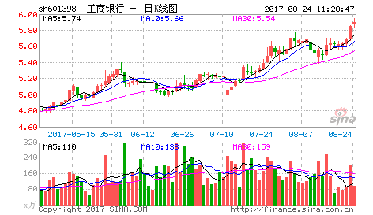
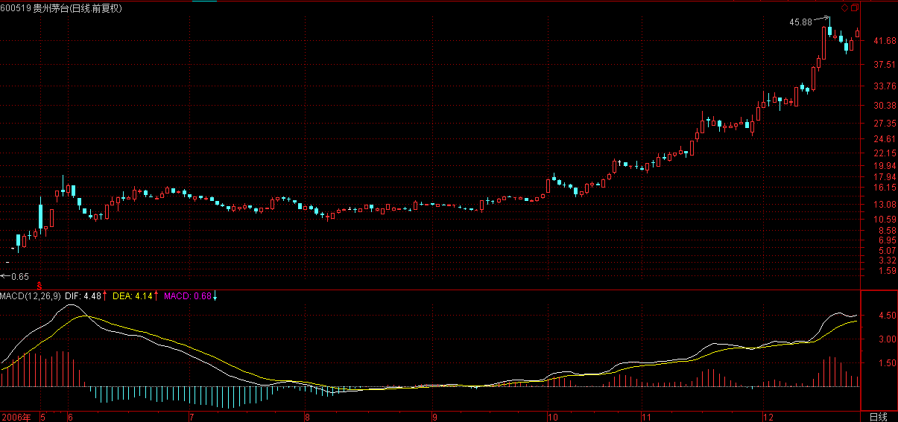
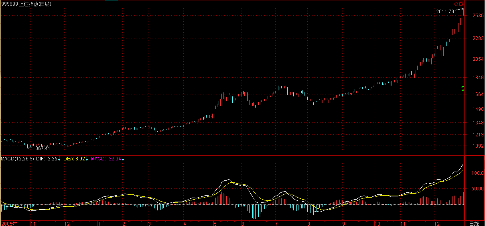
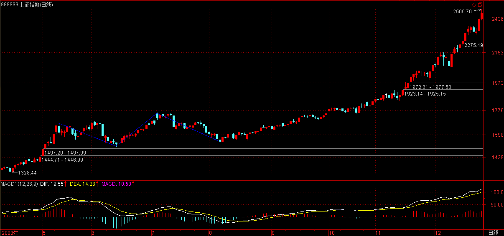
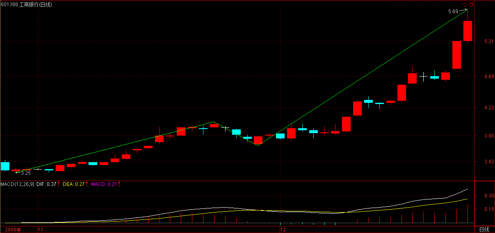

(2006-12-26 15：05：58)

【韶山映山红】原文配图是601398工商银行日K线图，新浪博客自动更新为当下的新图，这里贴上当时的日K线图。】
首先把前面一些最基本的概念、原理、定理列举如下：
走势：打开走势图看到的就是走势。走势分不同级别。
走势类型：上涨、下跌、盘整。
趋势：上涨、下跌。
缠中说禅走势中枢：某级别走势类型中，被至少三个连续次级别走势类型所重叠的部分。
具体的计算以前三个连续次级别的重叠为准，严格的公式可以这样表示：次级别的连续三个走势类型A、B、C，分别的高、低点是a1\a2,b1\b2,c1\c2。则，中枢的区间就是（max（a2,b2,c2），min（a1,b1,c1））而实际上用目测就可以，不用这么复杂。
注意，次级别的前三个走势类型都是完成的才构成该级别的缠中说禅走势中枢，完成的走势类型，在次级别图上是很明显的，根本就不用着再看次级别下面级别的图了。【韶山映山红】看本级别中枢的时候，以次级别为最低级别。更低级别是否满足递归的要求，不考虑了。否则，就只能从最低级别做递归。】
缠中说禅盘整：在任何级别的任何走势中，某完成的走势类型只包含一个缠中说禅走势中枢，就称为该级别的缠中说禅盘整。
缠中说禅趋势：在任何级别的任何走势中，某完成的走势类型至少包含两个以上依次同向的缠中说禅走势中枢，就称为该级别的缠中说禅趋势。该方向向上就称为上涨，向下就称为下跌。
注意，趋势中的缠中说禅走势中枢之间必须绝对不存在重叠。【韶山映山红】不只是中枢的区间，还包括中枢振荡的区间。】
“缠中说禅技术分析基本原理一”：任何级别的任何走势类型终要完成。
“缠中说禅技术分析基本原理二”：任何级别任何完成的走势类型，必然包含一个以上的缠中说禅走势中枢。
“缠中说禅走势分解定理一”：任何级别的任何走势，都可以分解成同级别“盘整”、“下跌”与“上涨”三种走势类型的连接。
“缠中说禅走势分解定理二“：任何级别的任何走势类型，都至少由三段以上次级别走势类型构成。
原理一“任何级别的任何走势类型终要完成”，这最简单的话，却包含着技术分析最基本的东西，其哲学和灵魂都在此，否则就不可能被列为原理一了，这是最重要的。【韶山映山红】技术分析的哲学和灵魂就是“走势终完美”。】
一个最简单的问题，如何判断一个走势类型完成了？
这是技术分析里最核心的问题之一，例如，一旦判断知道了“下跌”的结束，就知道随后必须要面对的是“盘整”与“上涨”，而后两种走势，对于多头来说，都必然产生利润，唯一区别，就是大小与快慢的问题。
如果在市场中能找到一种百分百确定的赢利模式，那就是最伟大的成就了，至于大小、快慢，可以继续研究出新的标准来进行判断，而在逻辑上，这是后话了。
这里最大的也是唯一的难点在于“走势类型的延伸”。
例如一个盘整，三个重叠的连续次级别走势类型后，盘整就可以随时完成，也就是说，只要三个重叠的连续次级别走势类型走出来后，盘整随时结束都是完美的，但这可以不结束，可以不断延伸下去，不断围绕这缠中说禅中枢上上下下地延伸下去直到无穷都是可以的。这有点像一个雏男在某种标准达到后就具有立刻成为面首的条件，随时可以被面首，但却也可以一直坚持下去，一直自我封闭，一直不让消费，最后把自己给浪费掉了，直到最后变成一个烂苹果。【韶山映山红】三个重叠的连续次级别走势类型就可以构成盘整走势类型，然后可以不断的延伸、扩张。】
同样，面对趋势，形成两个依次同向的缠中说禅走势中枢后，任何趋势都可以随时结束而完美，但也可以不断地延伸下去，形成更多的中枢。这种情况在实际操作中太常见了，如果这趋势是向上的，会不断上涨，看看600519之类的图，如果把复权算上，就可以看到一个标准的不断延伸的上涨。【韶山映山红】600519贵州茅台。】

大盘2005年见底后的30分钟图上，同样可以看到这种情况。

很多人抓不住牛股，经常在第一个中枢时就被震下马，最主要就是对此没有明确的认识。
反之，对于下跌的延伸，是所有抄底者的噩梦。
逃顶、抄底为何难？归根结底就是这“走势类型的延伸”闹的。
如何判别“走势类型延伸”是否结束？
这里，必须首先搞清楚，“走势类型延伸”的实质是什么？
对于趋势来说，其“延伸”就在于同级别的同向“缠中说禅走势中枢”不断产生；【韶山映山红】关键词：同级别、同向。什么情况下终止延伸？背驰转折，或者最后一个中枢升级。从中枢分析的角度看，背驰转折也是最后一个中枢升级。】
而对于盘整来说，其“延伸”就在于不能产生新的“缠中说禅走势中枢”。【韶山映山红】关键词：新的。什么算是“新的”？能独立于盘整而存在的。什么情况下终止延伸？不再围绕原中枢运动。非背驰的中枢移动，或者背驰的小级别延伸形成低级别的线段类趋势。】
由于“走势类型延伸”意味着当下的“走势类型”随时可以完成，因此相应的“类型”必然是确定的，【韶山映山红】先确定当下的走势类型已经形成，然后才有延伸可言。】因此“走势类型延伸”是否结束的判断关键就在于是否产生新的“缠中说禅走势中枢”。【韶山映山红】对盘整和趋势而言，都是判断是否产生新的中枢。趋势要yes，盘整要no。什么时候能说这个yes/no？这个过程就是中阴阶段。盘整的中阴阶段始于第三类买卖点，趋势的中阴阶段始于背驰。】
【韶山映山红】对趋势来说，什么情况下注定不会再有新的同级别、同向中枢产生？中阴阶段形成大级别中枢，不论后续是趋势最后一个中枢扩展升级，还是形成更大级别盘整，还是形成新的同级别转折，都不会再有同级别中枢了，即使有也与这个趋势无关了。】
【韶山映山红】对盘整来说，什么情况下肯定会再有新的中枢产生？盘整走势类型不继续扩张升级的唯一出路就是变成本级别趋势，就必须形成本级别第三类买卖点，并且在次级别以下级别形成中枢移动。】
此外，由于趋势至少包含两个“缠中说禅走势中枢”，而盘整之有一个，因此趋势与盘整的判别关键也就在于是否产生新的“缠中说禅走势中枢”。【韶山映山红】这里说“趋势与盘整的判别”，实际上是说一个盘整是否会演化为趋势的判别。也就是说，盘整只是当下的，未来是不是盘整还不好说，这个盘整还不是一个完成的走势类型，也可以说完成本身也只是一个当下的概念。 形成本级别第三类买卖点，并且在次级别以下级别形成中枢移动，就可能盘整演变为趋势。否则就只会继续盘整。】
由此可见，“缠中说禅走势中枢”的问题是技术分析中的核心问题，该问题一旦解决，很多判断上的大难题也将引刃而解。【韶山映山红】中枢的什么问题是技术分析中的核心问题？★中枢的生住坏灭。】
“缠中说禅走势中枢定理一”：在趋势中，连接两个同级别“缠中说禅走势中枢”的必然是次级别以下级别的走势类型。【韶山映山红】定理一讲两个中枢之间的连接段，只能是次级别或者次级别以下级别。】
用反证法，该定理的证明是很简单的，
【韶山映山红】Ｑ：如何证明18课中“缠中说禅走势中枢定理一”：在趋势中，连接两个同级别“缠中说禅走势中枢”的必然是次级别以下级别的走势类型。就算是是同级别的，好像也不会咋样呀？ Ａ：不需要证明，只是逻辑。如果连接两个中枢的还是同级别，凭什么把她们视为连接段？ 不是说这两个中枢之间不能有同级别走势。任何走势都是合理的，只不过，不是那么分析的。 假设，连接两个中枢A、B之间的走势，是同级别的，也就是说，这两个中枢之间至少还有一个同级别中枢C，而且依次是A、C、B。那么，问题的前提假设就不存在了，我们不能讨论A、B之间的连接段了，而是，要去讨论A、C之间的连接段。这样循环下去，最终，两个中枢之间的同级别连接段就不可能存在了。 我不知道怎么样用数学的语言去证明，不知道这样用逻辑推理的方法算不算证明。】
而这也回答了上一章中的作业一“连接两相邻同级别缠中说禅走势中枢的一定是趋势吗？一定是次级别的趋势吗？”
首先，这不必然是趋势，任何走势类型都可能，最极端的就是跳空缺口后形成新的“缠中说禅走势中枢”；【韶山映山红】可以是趋势或盘整，可以是更低级别的走势类型，可以是各种走势碎片，也可以什么都没有。】不必然是趋势，任何走势类型都可能，最极端的就是跳空缺口……走势类型包括趋势和盘整，很显然，这句话表明跳空缺口不是趋势。可是，跳空缺口也不能是盘整。也就是说，除了趋势和盘整之外，还有跳空缺口这种特殊的走势类型？★可以做个专题。以后研究。】
其次，也不一定是次级别的，只要是次级别以下，例如跳空缺口，就属于最低级别，如果图上是日线、周线，就不会是次级别了；【韶山映山红】次级别或次级别以下级别。】
最后，往往相连走势类型的级别越低，表示其力度越大，这也就是为什么缺口在分析中有比较强技术含义的理论依据所在。【韶山映山红】“相连走势类型”就是连接段。连接段级别越低的力度越大。当背驰比较的时候，如果有级别的差别，就不用辅助手段比较了。】
【韶山映山红】两个中枢的连接段不一定是次级别的，只要是次级别以下就行，甚至属于最低级别的跳空缺口都行。而且，相连走势类型的级别越低，表示其力度越大。 耳熟能详的这段内容，从另一个角度佐证了，构成第三类买卖点的次级别离开，不一定是次级别的，只要是次级别以下就行，甚至属于最低级别的跳空缺口都行。而且，离开段的级别越低表示其力度越大，也就越属于中枢移动的结构。】
由定义知道，“缠中说禅走势中枢”的产生原因以及判断标准，【韶山映山红】产生原因：次级别走势完成带来的转折，转折的走势重叠产生中枢。判断标准：三段次级别走势重叠。】也就是其“生”问题已经解决，那余下的就是其“住、坏、灭”的问题。也就是说，一个“缠中说禅走势中枢”是如何“维持”以及最终被“破坏”进而废弃的。【韶山映山红】生，产生。住，维持。坏，破坏。灭，废弃。】
先考虑其“维持”的问题。维持“缠中说禅走势中枢”的一个充分必要条件就是任何一个离开该中枢的走势类型都必须是次级别以下的并以次级别以下的走势类型返回，【韶山映山红】这里有两个关键点：次级别以下级别、返回。重点不是次级别以下的离开，而是离开后还没有来得及升级就返回了。】该问题很容易证明，因为无论是离开还是返回，只要是同级别的走势类型，就意味着形成新的“缠中说禅走势中枢”，这与原中枢的维持前提矛盾。
该命题表述成如下定理：
“缠中说禅走势中枢定理二”：在盘整中，无论是离开还是返回“缠中说禅走势中枢”的走势类型必然是次级别以下的。【韶山映山红】定理二讲盘整的组成段，只能是次级别或者次级别以下级别。 为什么说“在盘整中”而不直接说“在中枢中”？缠论的分析经常有两种，一是走势类型的分析，一是中枢的分析。有时候是混为一谈的，有时候是分开的。这里说的盘整是指震荡的形态，而不是说走势类型的盘整。 “次级别以下”是说次级别或者更低级别。 更低级别围绕中枢震荡不会结束中枢的延伸，次级别的离开返回不进入中枢区间才会结束中枢的延伸。】
由此，上一章作业三“盘整的高低点是如何造成的”就有了相应的答案：【韶山映山红】缠师的措辞和用语不尽人意。这个答案对应的问题不是盘整的高低点是如何“造成”的，而应该是怎样“构成”的。 这里说的盘整是指震荡的形态，而不是说走势类型的盘整。】
无论离开与返回的走势类型是何种级别的，在站最低级别上看，例如把1分钟图当成最低级别，那么最后连接离开与返回走势类型连接处的最低级别图，只能有两种可能：三根以上1分钟K线的来回重叠震荡后回头；二、1分钟K线无三根以上K线重叠的V型走势。【韶山映山红】完全分类：三根以上Ｋ线重叠，有或者没有。】
对于第一种情况，这几根重叠K线最极端那根的极端位置，就构成盘整中的高低点，一般来说，这种情况比较少见；对于第二种情况，这个V型尖顶那根K线的极端位置就构成盘整中的高低点，这种情况十分常见。这也是为何真正的低点和高点总是盘中一闪而过的理论依据。【韶山映山红】这个高低点其实就是后面才讲到的概念：分型。】
本ID的理论能解释技术图表上任何细致的问题，这才是一种真正理论所应该具有的品质。
这种的理论，不需要什么诺贝尔的奖励，那一百万美圆在市场上算得了什么？【韶山映山红】如果诺贝尔奖只说钱，还真没什么可说的。】
精通这样的理论，市场会给予你多得多的回报。
有了上面两个“缠中说禅走势中枢”定理，不难证明定理三：【韶山映山红】“缠中说禅走势中枢定理三”。】
某级别“缠中说禅走势中枢”的破坏，当且仅当一个次级别走势离开该“缠中说禅走势中枢”后，其后的次级别回抽走势不重新回到该“缠中说禅走势中枢”内。【韶山映山红】“当且仅当”说明是中枢破坏的充分必要条件。注意：这里的离开、返回都是“次级别”，而不是定理一和定理二所说的“次级别以下”了。】
这定理三中的两个次级别走势的组合只有三种：趋势+盘整，趋势+反趋势，盘整+反趋势。其中的趋势分为上涨与下跌，分别代表从上方突破与下方跌破两种情况。【韶山映山红】这里有两个问题一直要延续争论了很久：1，有没有盘整+盘整的组合。2，次级别以下级别的离开算不算。】
而站在实用的角度，最用力的破坏，就是：趋势+盘整。【韶山映山红】这里说“最用力的破坏”是破坏谁？★以后研究。】例如在上涨中，如果一个次级别走势向上突破后【韶山映山红】这里的突破是指突破中枢。】以一个盘整走势进行整理回抽，那其后的上涨往往比较有力，特别这种突破是在底部区间。这种情况太常见了，其理论依据就在这里。【韶山映山红】从某个角度看，定理三的三种组合只有两种：趋势+盘整，趋势+反趋势。盘整+反趋势的情况，也可以视为更低级别的离开+盘整。 也就是说，除了趋势+反趋势的情况之外，都属于最用力的破坏。】
【韶山映山红】缠师这篇文章应该是没有写完就匆匆忙忙结束的，走势中枢定理三之后应该顺势提出第三类买卖点的概念，然后回到文章开始的问题：如何判断一个走势类型完成了？】
【韶山映山红】两个走势类型组合的完全分类包括：趋势＋盘整，盘整＋趋势，趋势＋反趋势。第一类买卖点标志趋势的完成。第三类买卖点标志盘整的完成。】
【韶山映山红】中枢的生、住、坏、灭。次级别走势的完成带来次级别走势的转折，三次重叠而“生”中枢。只有次级别以下离开并返回中枢区间而“住”。次级别以下离开却没有返回中枢区间而“坏”。次级别以下离开却没有返回导致新中枢的形成而“灭”。】
【韶山映山红】本课题解：走势类型的结束成为完美，走势类型的延续就是“不被面首的雏男”，所以“是不完美的”。】
【韶山映山红】如何判断一个走势类型完成了？判断关键就在于是否产生新的走势中枢。产生新的中枢，就结束了盘整的延续，盘整完成。这个新的中枢可能与盘整中枢形成趋势，也可能是新的走势类型的中枢。结束趋势延续的不再产生新的中枢，是指不再产生新的原趋势同向同级别的中枢，但是可能产生新的走势类型的中枢，或者更大级别的中枢。】
【韶山映山红】缠中说禅走势中枢定理三中的两个次级别走势的组合只有三种：趋势+盘整，趋势+反趋势，盘整+反趋势。后面课程的问答关于“趋势+盘整”和“盘整+反趋势”有很多提问，集中复制到这里。
19课
wy1499 2006-12-27 16:20:50
2、还有缠中说禅走势中枢定理三中的两个次级别走势的组合只有三种：趋势+盘整，趋势+反趋势，盘整+反趋势。
我觉得这第三种组合不大好理解，走势中枢本身就是一种盘整图形，在后面紧跟着盘整，那还怎么区分出来，这段盘整是否属于前段走势中枢内呢？
再有假设命题正确，盘整之后为什么只有反趋势，就不能出现趋势呢？结束前一个走势中枢，盘整后再继续趋势走势，不是很正常吗？
盼解惑！
=========
趋势+盘整中的趋势中的价值中枢与盘整中的价值中枢的级别是不同的，后者更高。不能单纯地谈论中枢，必须结合级别。
注意谈论这个问题的前提，谈论的是中枢的离开与返回问题。如果以一个次级别的盘整类型离开中枢，返回当然不可能也是盘整类型，否则就构成一个大级别的盘整类型，这就与原中枢维持的前提矛盾了。
对于围绕中枢的运动，离开中枢的趋势是正趋势，返回的是反趋势。
2006-12-27 20:55
--------------------------------------------------------------------------------
27课
[匿名] 缠文观止 2007-02-05 16:41:46
这么快就到第三页了，我把问题再贴一遍啊，方便缠MM看。
－－－
“缠中说禅走势中枢定理三”：某级别“缠中说禅走势中枢”的破坏，当且仅当一个次级别走势离开该“缠中说禅走势中枢”后，其后的次级别回抽走势不重新回到该“缠中说禅走势枢”内。
这定理三中的两个次级别走势的组合只有三种：趋势+盘整，趋势+反趋势，盘整+反趋势。
趋势+盘整中的趋势中的价值中枢与盘整中的价值中枢的级别是不同的，后者更高。
如果以一个次级别的盘整类型离开中枢，返回当然不可能也是盘整类型，否则就构成一个大级别的盘整类型，这就与原中枢维持的前提矛盾了。
―――
以上是原文摘录。
我的疑问是：两个次级别走势的组合“趋势＋盘整”，盘整的价值中枢如果比趋势价值中枢高的话，又怎么能叫两个次级别走势的组合呢？这里的盘整是次级的吗？
====
只要走势走出来的，都是可能的组合，这很正常，
至于这些组合构成什么意义的图形，那是另外的问题。这两者不是一个概念。
2007-2-5 16:59
--------------------------------------------------------------------------------
29课
[匿名] 百思不解 2007-02-12 16:35:24
问题一：
趋势＋盘整，盘整的中枢级别高于趋势吗？（这时盘整不能叫次级走势吧？）
那第三类买点是在盘整结束后吗，还是盘整中第一个次级别走势的结束点？
趋势＋反趋势组合，就不存在这些疑问。
==
趋势＋盘整里，盘整的中枢级别肯定大于趋势里的中枢级别。
没有中枢，哪里有第三类买点？中枢形成中的第一次级别走势连中枢都没形成，哪里谈得上该中枢的第三类买点。
问题二：
盘整＋反趋势，盘整的中枢级别和反趋势的中枢级别相同吗？
==
和趋势＋盘整一样
问题三：
盘整＋盘整，如果以一个次级别的盘整类型离开中枢，返回当然不可能也是盘整类型，否则就构成一个大级别的盘整类型，这就与原中枢维持的前提矛盾了。
怎么理解呢？离开和返回中枢的两个次级盘整走势，无论哪个属于Z走势段，都有【dn,gn】与中枢区间有重叠啊，怎么会构成大级别盘整呢？为何不算中枢延续？
==
注意，这里说的盘整＋盘整，是在第三类买点的前提下的，后一个盘整的低点不会跌回前面中枢之内，这时候，无论后面怎么走，都至少有一个【dn,gn】不与中枢重叠，就不会是延伸了。
2007-2-12 17:04
--------------------------------------------------------------------------------
37课
[匿名] 努力学习 2007-03-20 17:33:57
楼主好，第18课有个定理有点疑问，该怎么理解？
定理三：某级别“缠中说禅走势中枢”的破坏，当且仅当一个次级别走势离开该“缠中说禅走势中枢”后，其后的次级别回抽走势不重新回到该“缠中说禅走势中枢”内。这定理三中的两个次级别走势的组合只有三种：趋势+盘整，趋势+反趋势，盘整+反趋势。
这定理三中提到的两个次级走势组合，比如“趋势＋盘整”，是否同级？这里说的是两个同级走势的连接，还是从走势组合观点看，那个盘整中枢级别高于趋势中枢级别？
==
这和连接的结合性有关。简单说，只要能分解出两段次级别走势就可以。
详细情况，下几堂课程会说到，请耐心等等。明天就继续说这几种不同分解的问题。
2007-3-20 17:51
--------------------------------------------------------------------------------
71课
[匿名] 百思不解 2007-08-21 16:01:49
缠姐好！下面是几个月以前跟贴的问题，至今仍想不明白。能不能详细说说？
――――――――
第18课有个定理有点疑问，该怎么理解？
定理三：某级别“缠中说禅走势中枢”的破坏，当且仅当一个次级别走势离开该“缠中说禅走势中枢”后，其后的次级别回抽走势不重新回到该“缠中说禅走势中枢”内。这定理三中的两个次级别走势的组合只有三种：趋势+盘整，趋势+反趋势，盘整+反趋势。
这定理三中提到的两个次级走势组合，比如“趋势＋盘整”，是否同级？这里说的是两个同级走势的连接？还是从走势组合观点看，那个盘整中枢级别高于趋势中枢级别？
==
这和连接的结合性有关。简单说，只要能分解出两段次级别走势就可以。详细情况，下几堂课程会说到，请耐心等等。明天就继续说这几种不同分解的问题。
==
盘整中枢为什么一定要高于趋势的？关键不是盘整还是趋势，而是中枢究竟是什么级别，没有中枢，没有中枢的级别，哪里有什么盘整、趋势以及他们的级别？
这个问题其实说过N次了，盘整结束的标志就是第三类买卖点，而趋势结束的标志就是形成该级别的背驰后对最后一个中枢的回拉，为什么一回拉趋势就肯定完成？因为，一回拉，肯定就有更大级别的中枢形成，所以原来级别的趋势肯定就破坏了。这个逻辑关系是极端严格的。
那么，我们是否要等到回拉才决定进出？当然可以，可以等回拉后再一次向上，形成所谓的第二类买卖点进行操作。这种操作，完全可以不用背驰概念，纯粹就用三类买卖点就可以。
当然，实际操作中，可以用背驰，在第一类买卖点操作，为什么？因为背驰后一定回拉，这是本ID理论的一个定理。
但从上面的分析可以知道，虽然背驰一定回拉这个定理是100%成立了，但即使没有这个定理，本ID的理论依然成立，为什么？因为走势必完美，第一类买卖点后还有第二类买卖点，这是纯图形的，而背驰是动力学的。
2007-8-21 16:20
--------------------------------------------------------------------------------
【韶山映山红】试着按我的思路总结一下次级别离开、返回的组合：趋势+盘整，趋势+反趋势，盘整+反趋势。
30分钟中枢，次级别离开的完全分类只有两种：5分钟趋势，5分钟盘整。
5分钟趋势离开，然后转折，只有两种情况：1，该级别更大级别的盘整，也就是30分钟盘整，这是“趋势+盘整”。2，该级别以上级别的反趋势，也就是5分钟的反趋势，这是“趋势+反趋势”。参见29课关于转折的内容。
5分钟盘整离开，盘整只有一个5分钟中枢，这个中枢有三种运动方式：延伸、新生和扩张。1，延伸，5分钟盘整离开后返回，意味着延伸结束了。2，新生，沿离开中枢的方向新生就会成为5分钟趋势离开，沿返回中枢的方向新生就是“盘整+反趋势”或者“盘整＋盘整”。“盘整＋盘整”再离开就会形成一个本级别中枢，与预设矛盾，所以没有这种情况，只有“盘整＋反趋势”。3，扩张，5分钟盘整的中枢扩张升级为30分钟中枢，就不是次级别离开返回的问题了，而是和原中枢一起成为更复杂的走势。
所以，次级别离开、返回组合的完全分类只有三种：趋势+盘整，趋势+反趋势，盘整+反趋势。】
【韶山映山红】如果是次次级别离开中枢、次级别返回不进中枢，行不行？还是用完全分类的方法来辨析。
30分钟中枢，次次级别离开的完全分类只有两种：1分钟趋势，1分钟盘整。
1分钟趋势离开，然后转折，只有两种情况：1，该级别更大级别的盘整，也就是5分钟盘整，这就等于是5分钟盘整离开。2，该级别以上级别的反趋势，也就是1分钟的反趋势，1分钟的反趋势不进中枢而转折，又只有两种情况：5分钟盘整和1分钟趋势再次离开，这两种情况都成了5分钟盘整离开。
1分钟盘整离开，盘整只有一个1分钟中枢，这个中枢有三种运动方式：延伸、新生和扩张。1，延伸，1分钟盘整离开后返回，意味着1分钟中枢延伸结束了。2，新生，沿离开中枢的方向新生就会成为1分钟趋势离开，沿返回中枢的方向新生就是1分钟盘整+1分钟反趋势，这个1分钟反趋势不进中枢而转折，又只有两种情况：5分钟盘整和1分钟趋势再次离开，这两种情况都成了5分钟盘整离开。3，扩张，1分钟盘整的中枢扩张升级为5分钟中枢，又成了5分钟离开。
所以，次次级别离开、返回的组合最终还是分析次级别离开返回的组合。】
【韶山映山红】第三类买卖点一般都是次级别离开、次级别返回，如果没有次级别离开，只有次次级别以下的离开呢？
这时候的三买卖点会出现在一个延伸升级或者扩张升级的本级别中枢里，也就是说，当下无法判断三买卖点在哪里，只有升级完成的时候，通过同级别分解的划分才能够确认三买卖点的位置。
那么，这种事后追认的三买卖点如何操作呢？这样的第三类买卖点只是名义上的，没有办法做当下的操作。而且，实际上这种情况并不需要操作。
如果前面的操作都是正确的，这样的三买卖点的时候，本身就已经是持股或持币的状态，不需要操作。
唯一的问题就是，如果是介入一个新股票，专门做三买操作的人，这种股票就不算目标股了。】
对不起，有一个重要的谈判，要去中关村，必须马上走，有问题请放在这，晚上回来回答。
2006-12-26 15:09
大盘现在的走势十分正常，

96年那次，发展涨了N倍了，很多股票都没涨，工行现在连一倍都没到，算得了什么？【韶山映山红】601398工商银行。】

成分股就是牛市第一轮的最重要股票，多次说了，就不要埋怨了。
下了，再见。
2006-12-26 15:12
今天回来太晚了，各位好好自己研究一下，别没怎么认真思考就随便发问，这样是学不到东西的。
晚安，再见。
2006-12-26 21:28
麻烦用简单语言详解一下1-17课，那些非k线的就不用说了，我都已经摘抄，但是我知道我理解肯定不全面，甚至我都不理解但又理解，如画中枢，上涨下跌我都能画出中枢，但是，我画出来后在一段走势中是一层包一层的，这我就不理解了。然后那个融合k线怎么融合？有什么原则？就是昨天的k线如果包含今天的k线了就算一根k线，这里是怎么理解呢？如果包含了3跟k线以上呢？
路痴单身狗，喜欢为热爱浪费时光的猫
泻药，我随便写，你随便看，缠和中医应该是最能招黑的话题了，我最近老写，真是抖m啊。
你只问了1-17课，因为比较笼统，不涉及细节，可说的东西很多。
先粘一段话：
72课：任何事都有缘起，…………并没有什么计划
然后就可以很明确的知道1-17课是怎么来的了，缠本来就是写随笔的，公认的到17课是分水岭，正式进入缠的原创理论。
1-17课很有意思的是写作的时间
第一课是2006-6-7日写的，当篇就在写，5月股票大涨，大家都挺忙的。马后炮的话，之后股市中期调整，所以第一课缠是在感慨明白人挣糊涂人的钱。
第二课是第一课后4个小时后写的，基本是个补充，
第三课6月9号，第四课6月19，第五课是6-21，第六课是10月24。这前几课写的可谓相当随意。
这是缠写缠论的第一阶段，基本上随笔，特点就是随意。感慨，吹牛的成分多一些，干货比较少。
之后从第七课开始，从写作时间上来说，基本上固定每周两篇左右的课文，周二和周五，虽然不严格，但基本看的出，写作态度的变化，写教股票变成一件可以排在日程里的事进入了缠的生活。干货也多了起来。
第二阶段，缠写的还是比较勤勉的，加上行情比较好，基本上是有清晰的逻辑线可以寻找的。
之后还有缠6000点大顶，搞私募，生病，写起来就开始吊儿郎当了。也可以分为几个阶段，因为你问的是1-17课，就不说了。
时间上1-17课刚好是第一阶段进入第二阶段。笔风由随意到严谨。
结论：从写作动机的角度，1-6课基本是随笔，7-16课是在摸索写作风格阶段，感觉野心太大，想写个小白教程，后面文风崩坏，还出现过顺势平台这种和定义都矛盾的东西，然后才开始写往严谨写。到了17课估计是想明白了，开始正式写。
1-17课从内容上分类一下吧
这里从第七课开始说，1-6课略过。
第一类：交易系统，7-10课基本就在讲同一件事 。都是缠的直接经验，理论涉及的很少，交代了一些原则性的问题。
第二类：均线，11-14课。这部分争议就比较大了，但如果你把这部分的内容等同于分型指导操作的地位，你就该知道，缠论是分为两部分的，一个是中枢系统的精确分析系统，其次有若干个辅助判断系统。均线系统，尤其是吻系统，可以在不精确分析的情况下，快速判断出股票运行状态。可以视为缠论的一个子系统。
第三类是15，16两课。这两课我看了一些知乎的帖子，说清楚的很少，基本都略过，看明白的觉得简单，不明白的觉得缠写的很突兀，也因为不重要，所以通常的做法是不理会。网上找来的缠论资料里关于这两课配图啊，解释啊错的就比较多了。这个话题就不展开了，下文会简单提一句。这两课，和11-14课的均线一样，是基于经验，不严谨的辅助判断的子系统。
这里重点说一下第17课吧，这是缠论的开端，是缠论的逻辑起点，读明白第17课对后面的学习很有帮助，因为，缠论是建立在推理之上的理论，在逻辑上必须自洽。
这里简单的梳理一下17课的内容。他的推理逻辑是这样的。
1，走势可分为趋势和盘整。（从无数图形中总结而来）
2，第一条是静态的，变动态，就有了走势终完美
3，引入中枢，定义趋势和盘整。
4，中枢定义的趋势和盘整符合走势必完美。
5，我们可以用走势必完美的的性质进行走势的分析。
逻辑链条严丝合缝对吧！那为什么么小白看不懂呢，因为缠偷换了概念。
第一条，走势可以分为趋势和盘整，中的趋势和盘整的定义是，前后高低点定义的，精确一点是，吻附近的高低点定义的。这个定义下，走势是可以简单粗暴的分为趋势和盘整的。
也就是说，走势必完美推论的前提是以高低点定义的趋势和盘整。
第三条，引入中枢后，经过重新定义的趋势和盘整还能走势必完美么？
明白了么，缠用15-16两课中的定义，引出了缠论的核心，却在17课推理的过程中悄悄的偷换了概念。我相信缠不是故意的。首先，中枢定义的趋势盘整是符合走势必完美的。其次，作为缠论开篇，重点在逻辑推断，而不在这些细枝末节。最后，缠在之后的课程（102课）也有说明，但因为两课跨度太大，很多人联系不上而已。
其实看懂15-16两课，是很容易发现这里的问题的。
那么中枢定义的趋势和盘整符合走势必完美么？
结论是符合，但符合的前提有两个，就是唯一分解和级别。这两个概念在缠论里极端重要，就是因为，这是缠论成立的起点。我们所有的分析都围绕着走势终完美的两个性质展开的。所以，唯一分解和级别是学缠的难点。其实缠在之后的课程对这两个问题着墨很多，但还是好多人闹不明白，纠缠在笔啊，分型啊，线段里。要么觉得62课前的缠分析股票和之后分析股票好像很割裂，不是一个理论。还有阴谋论说缠的缠论是现发明现写的。这都是常见的弯路。原因无非是没读懂17课，也没好好读102课。
之后缠的理论缓缓展开，顺便说一句，我认为缠论40课时就写完了。剩下的不过是在补漏，和丰富而已。初学的话很容易走的弯路就是，想学明白了理论，再杀回股市里，事实上完全没必要。举个小例子，缠一会写同级别分解，一会非同级别分解，绕来绕去，一会允许盘+盘，一会又不许了。其实你随便打开一张30f的走势图，你就会发现，走势的复杂性，来源于同一张图上，同时存在1f，5f，30，大大小小各种中枢，毫无规律，同级别分解，就是强行将这些中枢唯一分解，标准就是同级别，于是有了结合律。相当于用分解方式适配级别，反过来，非同级别分解就是用级别适配分解。所以才不管怎么分解都觉的拧巴，因为走势就是混着来的，在层层叠叠的走势中，找到唯一的一条路，就是缠论在讲的东西。
先写这么多，晚上3点了，睡了，
缠论研究中
从缠师的角度。
初时只是漫谈，所以并不涉及太多深奥的技术知识。就像投手轻轻抛出的一个球，并不会加上技巧刻意让你接不着。但如果接球的是一个牙牙学语的小孩子，怎么丢球都很难让孩子接住。
阅读是有受众的，脱离认知的层次只是一堆无意义的文字。
从学习者的角度。
课文就是信息，而学习的目的，就是通过有限的例子压缩信息，重塑大脑链接，在脑中形成一个输入与输出间的函数关系(参考公众号“超智体”描述)。
因此学习者的首要目标，是收集大量的例子，先把书读厚；然后再通过例子提取输入与输出的关系，即再把书读薄。收集例子最好的途径，莫过于原著本人的分析实例。
综上，通读原文加课后回复，再反复到市场中磨炼，最终才能融会贯通。离了这个，都只能给你自以为看懂的错觉。
本课目录
教你炒股票18：不被面首的雏男是不完美的。【网文】缠中说禅的1到17课怎么融会贯通？